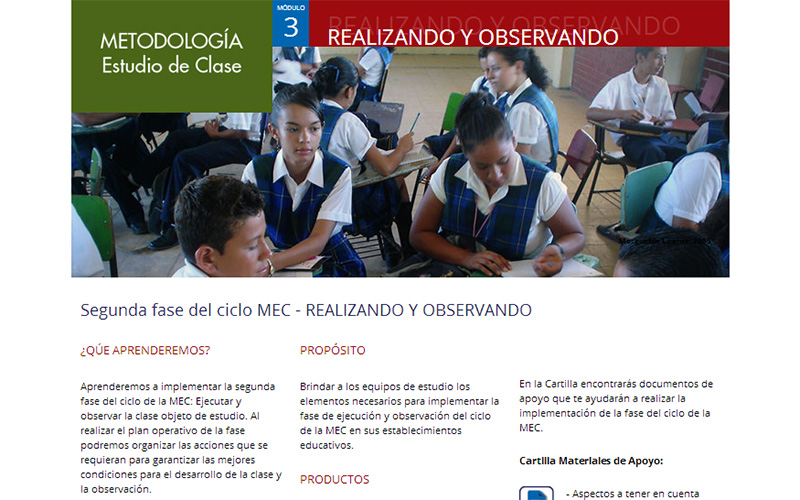
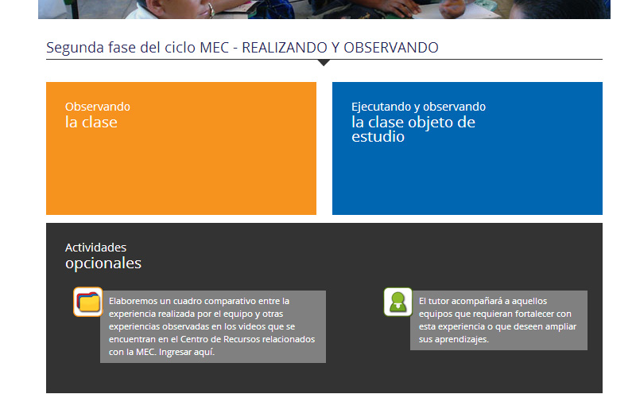
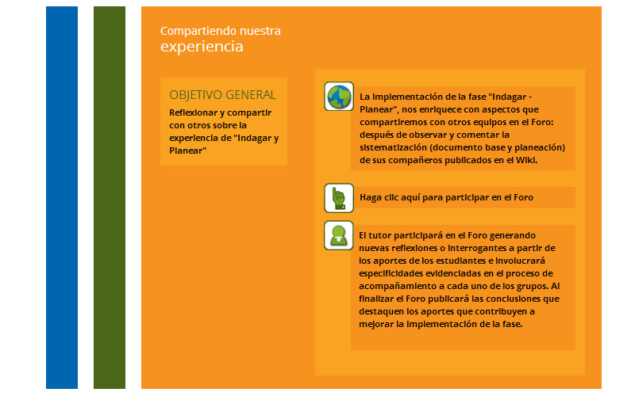

Metodología estudio de clase –MEC-
Es un programa de formación virtual para docentes en ejercicio. Su objetivo es fortalecer las competencias profesionales de los docentes desde la reflexión de las prácticas de aula y el diseño e implementación de ambientes de aprendizaje que posibiliten el desarrollo de competencias básicas de los estudiantes.
Este curso de formación tiene una duración de 77 horas, está dirigido especialmente a docentes de Ciencias Naturales y Matemáticas y con él los maestros desarrollan procesos de enseñanza a partir de las problemáticas propias de su realidad de aula y de la aplicación del modelo de aprendizaje colaborativo.
La inscripción a este curso se realiza bajo dos modalidades:
- Inscripción grupal por institución educativa: Un colectivo de maestros del mismo establecimiento educativo, conformado por 3 a 6 docentes, y de ser posible que incluya a un directivo docente.
- Inscripción individual: Un docente interesado que durante el desarrollo del curso conforma un equipo con docentes de diferentes establecimientos educativos y con ellos realiza las actividades propuestas.



◄ Deslice las imágenes con el dedo ►